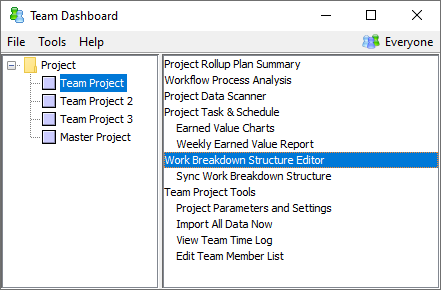
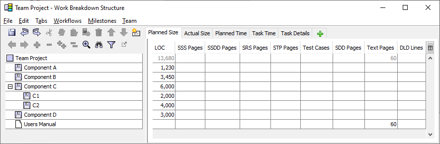
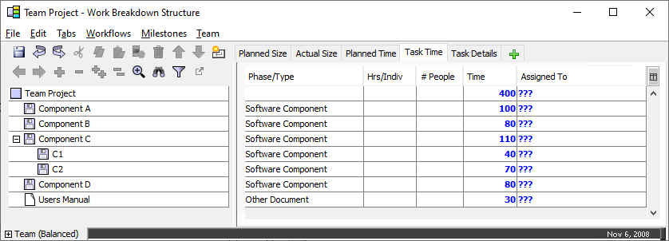
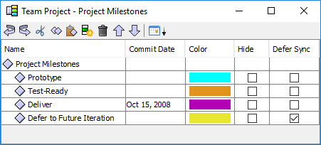
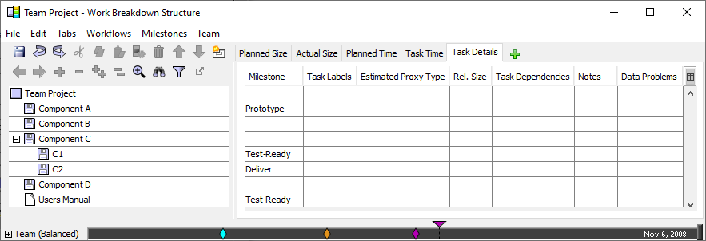

One of the first tasks in your project launch will be to create your overall project strategy. The dashboard provides powerful tools in support of this task.
Your project strategy begins with a conceptual design. To promote the free flow of ideas, it is often a good idea to use a whiteboard, easel, and other traditional meeting aids to capture the team's ideas.
As the conceptual design begins to take shape, you will begin to identify the main components / features of the product to be produced, or the main categories of work to be performed. These items will ultimately become the top-level entries in your project WBS. While the team continues to capture these on a whiteboard, it is helpful to have one person copy these into the dashboard's Work Breakdown Structure Editor in real-time.
To do this, select the team project from the tree on the left side of the Team Dashboard window, then choose "Work Breakdown Structure Editor" from the list on the right.

The Work Breakdown Structure Editor will open.

The Work Breakdown Structure Editor displays your hierarchical work breakdown structure (WBS) on the left. Tabs on the right hand side of the screen provide access to various collections of project planning metrics. During the conceptual design process, you will primarily use the hierarchical list on the left-hand side. If you need more space to view this hierarchical list, simply drag the splitter bar to the right.
The WBS is displayed in outline format. To create a new item in the WBS, just press Enter or Insert. Click on the name of an item to edit it. To arrange items hierarchically, press Tab or Shift-Tab to change their indentation within the outline. You will find many of these tasks repeated on the toolbar and the Edit menu. For more in-depth information, see the Editing the Work Breakdown Structure help topic.
If this team project is a member of a master project, the master project leader may have outlined a set of high-level components that you should use as the basis for your conceptual design. As you enter your conceptual design into the WBS, you should align the tasks you create underneath the appropriate high-level components from the master project whenever it makes sense to do so.
Most of the items you enter during conceptual design will be
software components. These items appear in the WBS with a small floppy
disk icon ( ). If your conceptual design includes
documents or tasks, you can alter the type of an item by clicking on
the icon. A menu will appear that you can use to change the WBS item
type.
). If your conceptual design includes
documents or tasks, you can alter the type of an item by clicking on
the icon. A menu will appear that you can use to change the WBS item
type.
To complete the conceptual design, the team typically produces rough size estimates for each item in the WBS. You can enter this data by selecting the Size tab on the right-hand side of the screen. The sizes of software components should be estimated in lines of code (LOC), and documents should be estimated in pages. If you have created any tasks in your conceptual design, you can enter a size metric of your own choosing in the Units column.
With rough size estimates in place, your team is ready to determine its overall project development strategy. One component of this strategy will be the list of items you wish to include in the upcoming project phase or cycle. If your plan includes large software components that will be developed over multiple iterations, you may wish to hierarchically subdivide them to mirror this decision.

Of course, it is also important to produce a rough understanding of the amount of effort that the project will require. Your team may use a variety of planning techniques (such as fuzzy logic, wide-band delphi, or PROBE) to estimate the approximate amount of time each component will require. In accordance with TSP planning techniques, these should be "direct time" estimates, corresponding with the amount of direct time per week that each team member estimated that they would be able to spend on project work. As you produce these estimates, you can switch to the Task Time tab and enter them in the Time column.

These rough time estimates form the basis for the team's capacity planning. Stakeholders will be interested in knowing how long it will take to finish the project, and when various iterative deliverables might be ready. To see this information, click the Team menu and select the "Show Bottom Up Time Panel" option. Also, look on the Team menu and ensure that the box is checked to "Include Unassigned Effort in Balanced Team Calculation." With these settings in place, the black horizontal "Team" bar will show the date when the team might be able to complete all of the work for the entire project. At this early stage in the planning process, it is probably most helpful to hide the colored bars for each team member by clicking the icon to the left of the "Team (Balanced)" label.
As described above, teams can produce estimates manually and enter them directly on the Size and Task Time tabs. If desired, teams can also use a more advanced technique based on estimation proxies.
During high-level planning, it can often be difficult to visualize details like the number of LOC, pages, hours, etc. that will be required for a particular component. The team may have more success visualizing the work in terms of high-level concepts like "Change Requests," "User Stories," "Help Documents," etc. In the TSP parlance, these high-level concepts are called "proxies." The team can create and edit a list of proxy tables by choosing "Edit Proxy Estimation Tables" from the Workflow menu.
Each proxy table has a unique name, and is displayed with a table icon. You can create a new proxy table by highlighting the name of an existing table and pressing Enter or Insert. Within each table, rows are listed for relative sizes such as small, medium, and large. You can create new relative size rows by highlighting a row and pressing Enter or Insert, and you can delete unneeded rows by pressing the delete button on the toolbar.
For each relative size row, you can enter a size, rate, and/or time. All of these columns are optional. If the team is not worried about estimating size, they can create a proxy table that only uses the Time column. Similarly, the team can make use of the size column only, if they prefer to make time estimates using a different technique. Of course, it is possible to enter numbers in all three columns if desired.
Best practices for estimation often recommend the use of a logarithmic scale for the estimates in the relative size rows. Accordingly, the proxy editor will automatically fill in empty rows for you as soon as you enter one or more size or time estimates. For example:
There is not a Save button on the Proxy Tables Editor. Instead, tables are automatically saved when you save the main work breakdown structure. To save, switch back to the main Work Breakdown Structure Editor window and select Save from the File menu.
If you build proxy tables that are reusable across different projects or different teams, you can use the Import and Export buttons on the toolbar of the proxy editor window to copy tables between projects.
After creating these tables, the team can return to the Task Details tab on the main WBS Editor window. Select a proxy type and a relative size for a particular component, and the WBS Editor will retrieve the corresponding size and/or time estimates from your proxy table. This technique can help a team to very quickly produce estimates for a large number of components in the Work Breakdown Structure.
Most teams will also need to plan the iterative development approach for the project. Many decisions factor into this iteration plan, including the prioritization of work and the relative amount of effort that can be allocated to each cycle. To explore these tradeofs, click the Milestones menu on the WBS Editor window, and select Edit Milestones.

You can enter milestones corresponding to cycles/iterations, to noteworthy schedule events, or to external commitments. Place the milestones in approximate chronological order. Each milestone should have a unique name. Commit dates are optional.
Back on the WBS Editor, choose the Task Details tab and select the most appropriate Milestone for each component. As you do, diamonds on the horizontal black "Team (Balanced)" bar will indicate the approximate dates when the team could finish all of the components allocated to a particular milestone. As you change the milestone assignments for various components, the diamonds will update dynamically to indicate the optimal date when each milestone could finish.

If your capacity planning needs are complex, you may benefit from the techniques decribed in the alternative plans help topic.
There is not a Save button on the Milestones Editor. Instead, milestones are automatically saved when you save the main work breakdown structure. To save, switch back to the main Work Breakdown Structure Editor window and select Save from the File menu.